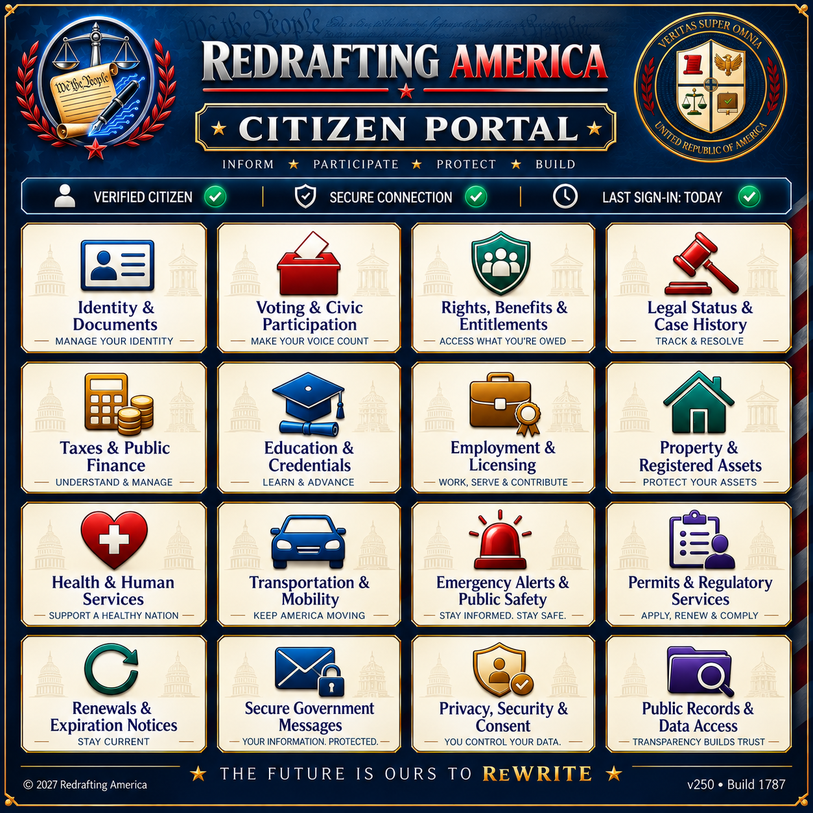

v0.7 BETA
Ex Uno Floremus — From One, We Flourish
Redrafting America is a nonprofit civic initiative designing Constitution v2.0 — a modern constitutional framework for a future democratic society, built around truth, accountability, technological modernization, and human dignity.
Many modern democracies are struggling because their political and institutional systems were designed for the realities of the 18th and 19th centuries — not the technological, informational, and geopolitical challenges of the modern world.
Redrafting America seeks to rethink governance from the ground up while preserving the strongest principles of constitutional liberty, democratic representation, individual rights, and human dignity — prioritizing transparency, evidence, and accountability over propaganda and manipulation.

Our flagship framework — a comprehensive constitutional redesign for a hypothetical future nation, the United Federation of America. It combines constitutional democracy, digital governance, civic accountability, anti-corruption systems, and human rights protections into a single modern design.
Structured into Articles covering rights and liberties, government structure, elections, economics, judicial systems, and civic participation — with a Five Branch Government that adds independent Education and Oversight branches to the traditional three.
Every institution in Constitution v2.0 is named, defined, and grounded in a guiding principle — from the Concordium (legislative) to the Veritium (independent oversight). This is a working reference, not a finished product.

Constitution v2.0 proposes a secure digital civic infrastructure — citizen portals, transparent participation systems, and modernized public services — designed to remain publicly auditable, constitutionally limited, and subordinate to civil-liberty protections at every step.

Redrafting America is ultimately an invitation to imagine how democratic civilization might evolve to meet the challenges of the modern age — without abandoning liberty, truth, human dignity, or constitutional governance.
It's rooted in the belief that humanity is capable of building institutions that are more transparent, more accountable, more resilient, and more humane than those inherited from the past.
The homepage is the project’s starting point. These six answers provide the context a new visitor should have before reading Constitution v2.0 or the papers that explain its development.
Redrafting America is a nonprofit civic initiative developing a proposed modern constitutional framework.
The work asks how constitutional government can become more resilient, accountable, transparent, and capable in the modern era.
The project begins from constitutional liberty, democratic representation, individual rights, and human dignity rather than discarding them.
Every Article will be paired with an Explainer covering what the text means, why that direction was chosen, and the supporting sources.
The constitutional text is still being developed. Status labels and public version histories will distinguish working material from approved releases.
Articles and Explainers come first. Structured public deliberation will wait for the future Digital Constitutional Convention.